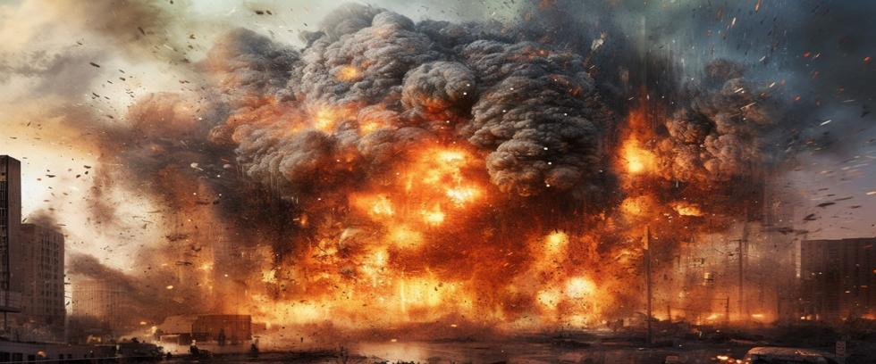

For much of the 20th century, nuclear weapons were framed within a fragile doctrine of balance called Mutually Assured Destruction (MAD). The concept was simple: if two adversaries had the power to annihilate each other, neither side would strike first for fear of retaliation. But times have changed, and new nuclear powers have also arisen, some of them dangerously unstable.
In today’s security landscape, asymmetrical warfare, or the use of unconventional strategies by weaker nations to challenge stronger ones, has penetrated the nuclear domain. This does more than challenge traditional rules of nuclear deterrence – it renders them irrelevant.
What is Asymmetrical Warfare?
Asymmetrical warfare isn’t new. Guerrilla tactics, cyberattacks, and terror campaigns all fall into this category. The hallmark of asymmetry is that one side fights in ways the other side isn’t prepared to counter. Instead of confronting strength with strength, it targets vulnerabilities in stealthier ways.
But applying this concept to nuclear strategy is a dangerous game. The structure of nuclear stability breaks down if a nation with weaker conventional forces compensates by using nuclear weapons for offensive purposes or threats, instead of defensive deterrence.
Ships With Something Extra
It used to be obvious who launched a nuclear strike. Fewer nuclear powers existed in the past, and it’s relatively easy to track aircraft or missiles in flight. But it may not be so obvious today.
One asymmetrical strategy is concealing nuclear weapons in ships. Thousands of tramp steamers roam the oceans like seafaring eighteen-wheelers every day. Anyone could carry nuclear weapons. North Korea could use this approach right now with a high probability of success. Or terrorists with a bomb.
A ship could be rigged for remote-controlled operation, turning the abandoned craft into a deadly drone. Only basic, gun-type atomic bombs would be required to get the job done – one bomb per ship if more than one target was selected. Detonation would occur immediately upon entering port before authorities were involved.
And worse yet: a regular ship is not required for such a task. Any yacht large enough to comfortably cross an ocean will suffice. Private boats don’t need to say where they are going when they leave a country. They just show up at the next port and call customs.
Mid-sized civilian aircraft could also carry nuclear weapons. A flight plan could be filed and standard communications relayed through the remotely controlled drone. The possibilities are endless.
Radioactive Clouds of Steam
Some nukes kill with a radioactive cloud of steam. About eighty feet in length and six feet in diameter, Russia has produced a new category of asymmetrical weapon called the Poseidon nuclear torpedo drone. Designed to evade sonar and attack by surprise, Poseidon’s are massive nuclear torpedoes that cruise at depths of 3,000 feet and at speeds in excess of sixty miles per hour.
Nuclear propulsion provides essentially unlimited range, and Poseidon’s are sized for thermonuclear weapons in excess of 100 megatons – nearly 7,000 times the power of the Hiroshima bomb.
Ironically, the inspiration for Poseidon drones came from a US nuclear test in the Marshall Islands in 1946. When Baker Shot detonated a basic atomic bomb ninety feet beneath the surface of Bikini Lagoon, the ejected cloud of radioactive steam spread rapidly over the ocean.
Of the ninety-five Navy ships contaminated, nine received less radiation and were safe enough to scrap. But eighty-six ships could not be approached without radiation protection and had to be scuttled in place.
This is a game-changer, a weapon that arrives without warning with devastating effect. It’s also significant that Poseidons don’t need boats. Travelling 1,500 miles a day, they can be launched directly from Russia’s coast to arrive at targets worldwide in less than a week.
Some even claim Poseidon could generate massive tsunamis that flood coastal cities, but the real threat is detonating underwater hydrogen bombs in harbors, or deep-water rivers and lakes. A single drone could render large swaths of America’s heartland uninhabitable for decades. Or they could destroy every warship in port, including Trident submarines at dock in Georgia and Washington State.
Nuclear propulsion allows Poseidons to cruise around underwater for years, awaiting orders to strike. And they are relatively inexpensive. There is no crew to feed, no costly life support systems to build and maintain. With their relatively low price, it’s entirely possible the world’s oceans may soon be flooded with hundreds, or even thousands, of Poseidon nuclear torpedo drones.
Nuclear Shipping Containers
Another asymmetrical weapon that has been developed, but not yet deployed, is Russia’s Club-K shipping container missile system. These resemble ordinary shipping containers until the roof tilts up and the missiles inside rise for launch.
Clubs can fire a variety of conventional and nuclear weapons, including tree-topping, radar-avoiding, KH-102 cruise missiles, with a 3,000-mile range and 250-kiloton thermonuclear warheads. The nondescript nature of Clubs makes them easy to conceal as they hide in plain sight among millions of similar containers transported on ships, trucks, and railcars daily.
Their stealth capability and relatively inexpensive nature make them perfect for waging asymmetrical warfare. And it’s not the best news that Clubs are now for sale on the international arms market under the ironic trade name, Pandora’s Box. A weaker nation seeking asymmetrical strategies against a stronger opponent might understandably see Clubs as a tempting option.
The End of Predictability
Nuclear strategy was about predictability during the Cold War. The U.S. and the Soviet Union both knew the stakes. If one side launched, the other would retaliate with everything they had. Grim as it was, that fragile understanding created an uneasy kind of temporary stability.
But rogue regimes and aggressive politics have rendered the relative predictability of the Cold War a thing of the past. North Korea’s inflammatory rhetoric, Iran’s nuclear ambitions and disruptive behavior, or the possibility of terrorist organizations obtaining fissile materials, have introduced players not constrained by the old rules.
These new actors may not need massive arsenals to achieve their goals. One or two nuclear weapons, or even the threat of them, naturally draws attention from potential adversaries. The goal isn’t to win a conventional war in asymmetrical conflict. It’s to damage your opponent however you can, while also remaining anonymous to avoid retaliation.
Tactical Nukes as Tools of Asymmetry
Tactical nuclear weapons are susceptible to asymmetrical use. Compared to strategic nuclear weapons, tactical nukes are easier to obtain and to secretly deploy – qualities that make them attractive to weaker nations seeking to level the playing field.
Imagine conventional war breaking out between a major military power and a smaller nation with a handful of atomic bombs. The smaller nation, knowing it cannot win a direct fight, might threaten to detonate a low-yield device in a large city to make victory too costly.
But this is uncharted territory. Would the larger power back down? Would it retaliate with enough force to finish it fast? Would escalation spin out of control before saner heads prevailed?
Tactical nukes create scenarios where no clearly defined line between conventional and nuclear war exists. That line, once a divide between sanity and insanity, is fading fast. Sane people may fight wars, but not with nuclear weapons.
Cyber and Nuclear: A Terrifying Combo
Asymmetrical warfare in the nuclear age isn’t just about weapons. It’s also about the systems that control them, some of which may be vulnerable to hackers.
Cyberattacks are increasingly seen as part of nuclear strategy. An effective piece of malware could disable early-warning systems, confuse command structures, trigger false alarms, or even launch missiles if the hacker was skilled enough. The fact that such a hacker might be a talented civilian with any number of possible motivations is another sobering consideration.
In a world where military assets are increasingly integrated with digital systems, a nation may not need nuclear weapons to influence how they are used. Skilled hackers and talented mathematicians who can write advanced algorithms may be enough.
This combination of rogue hackers and nuclear asymmetry is perhaps the most terrifying aspect of modern warfare. It’s outside the control of the authorities. Unforgiving decisions of life-and-death on a massive scale may be placed in the hands of unstable characters with questionable motives.
Asymmetrical Warfare Creates Misunderstandings
A core risk of asymmetrical conflict is misunderstanding. Each side understands the other side’s strategy in a symmetrical world, but asymmetry breeds uncertainty.
When smaller players introduce unpredictability into established systems, larger powers might assume worst-case scenarios and act preemptively. Critical decision-making in such an environment may depend less on rational calculation and more on emotional reflex.
Asymmetry and Arms Control
Current arms control agreements, where they still exist at all, are relics of the Cold War. They focus on reducing strategic weapons and managing relationships between superpowers, but ignore cyber threats and asymmetrical warfare.
Without new agreements that reflect new realities, the world is dangerously exposed. Old measures are useless against new threats, and fresh mechanisms are needed that address tactical nukes, digital warfare, and the murky gray zone where conventional and nuclear worlds collide.
The Illusion of Control
Some strategists argue that asymmetry can be managed. They say smaller nukes can be useful, and cyber capabilities offer new methods of deterrence. But history reveals such thinking is delusional. Once wars get started, they rarely go as planned. Assumptions break down, communications fail, and emotional decisions override logical ones.
Believing that nuclear escalation can be managed and controlled, especially in the context of asymmetrical warfare, is like adults believing in Santa Claus.
The Path Forward
At Our Planet Project Foundation, we believe real security lies in eliminating nuclear weapons, not inventing new ways to use them. Deploying nuclear weapons as tools of asymmetrical warfare introduces dangerous new elements of uncertainty into strategic calculations.
The possibility of an asymmetrical nuclear attack escalating into a global nuclear catastrophe is simply too great to ignore. We believe, as always, that voters can prevent this from happening if our overwhelming majority is organized into the political force that it can be.